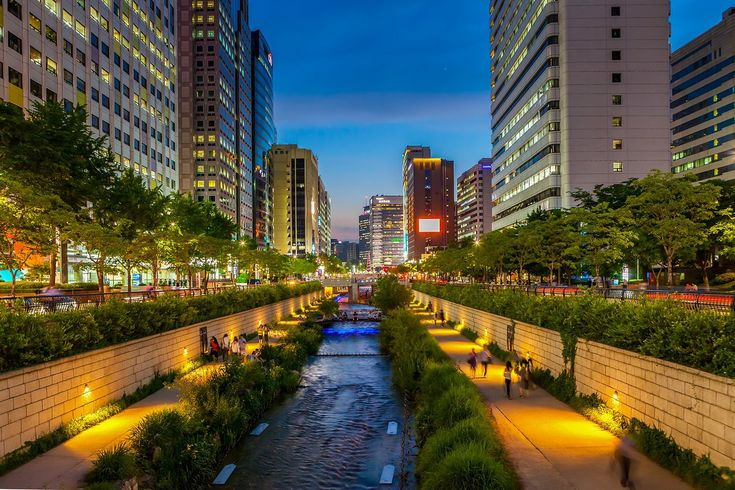
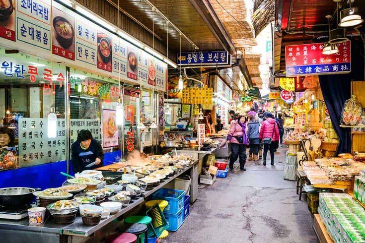
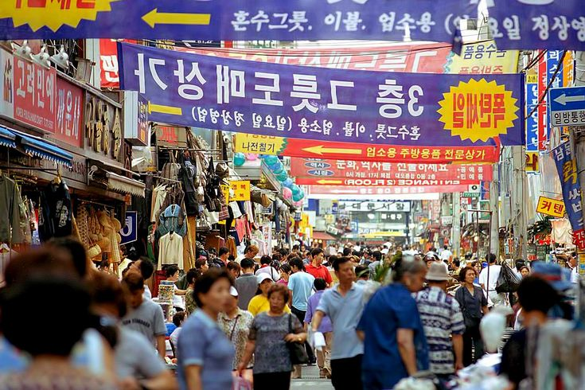
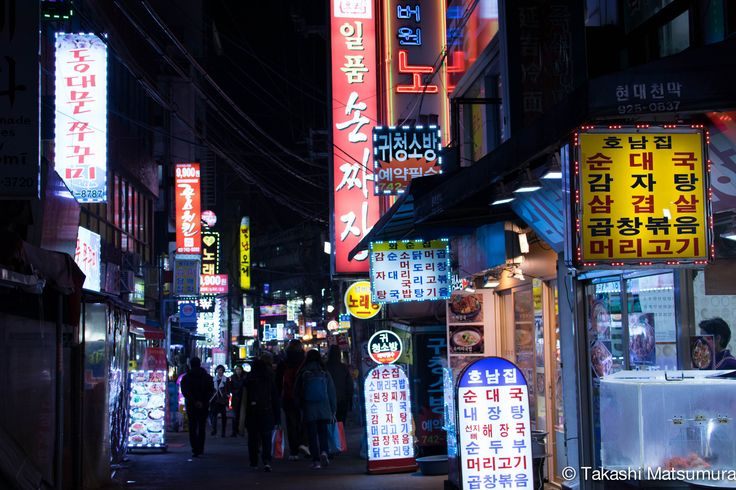
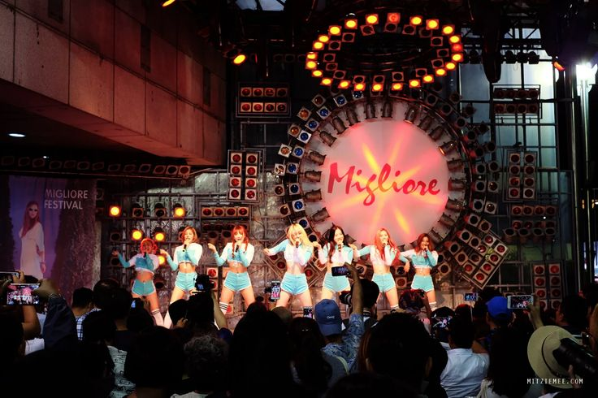
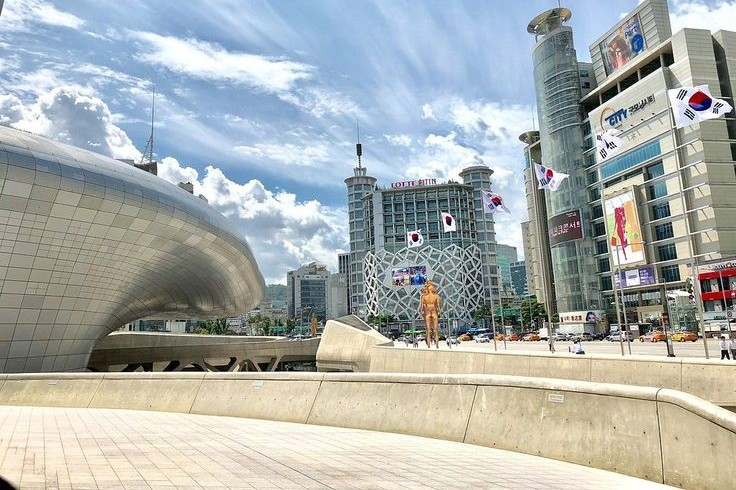

Mercado Dongdaemun

Importante atracción turística de Seúl, Dongdaemun es una importante zona comercial situada en Jongno-gu, parte central de la ciudad. Viajeros de todo el mundo vienen a visitar el Parque Cultural Dongdaemun History & y la futurista Dongdaemun Design Plaza (DDP), obra maestra arquitectónica diseñada por la célebre Zaha Hadid. Con sus extensos centros comerciales y su famoso mercado, Dongdaemun ofrece a visitantes y residentes la oportunidad de explorar una parte vibrante de Seúl.
Con más de 30.000 tiendas especializadas y cientos de boutiques de moda, Dongdaemun es un paraíso para los compradores, ya busquen las últimas tendencias, ropa de calle única o artesanía tradicional coreana. La zona funciona casi 24 horas al día, 7 días a la semana, y muchos mercados mayoristas y locales comerciales nocturnos permanecen abiertos hasta el amanecer. Esto la convierte en uno de los pocos lugares del mundo donde se puede comprar moda en plena noche.
Más allá de las compras, Dongdaemun es rico en experiencias culturales, con monumentos históricos, exposiciones de arte y museos interactivos. Los visitantes pueden disfrutar de la comida callejera local, pasear por el arroyo Cheonggyecheon o contemplar por la noche el deslumbrante DDP iluminado con LED. Con tanto que ver y hacer, es posible que los viajeros quieran planificar un itinerario para aprovechar al máximo su visita.
Mas imagenes sobre Mercado Dongdaemun





